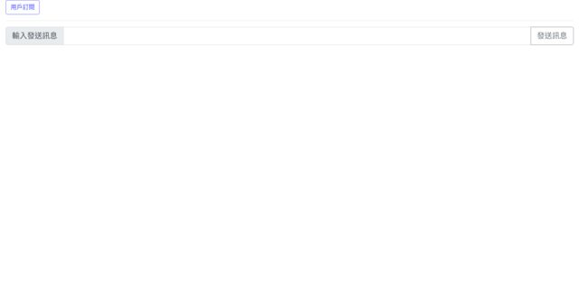

Python使用Lotify建立簡單LINE Notify筆記
2020-10-30 09:01:00
2020-10-30 09:01:00
前言
參加今年MOPCON 2020 剛好聽到LINE自家工程師演講開發Python套件Lotify，此套件已經整合LINE API呼叫操作部份， 來試試看發送基本文字訊息與訂閱基本實作。
此筆記範例 GitHub: https://github.com/s123600g/LINENotifyDemo_Lotify
環境建置
使用Flask做一個簡單網站框架，搭配Vue3來做一個簡單資料操作(這只是作者個人自己還在學習Vue，套入簡單練習應用)，在Ubuntu 20.04環境下實作。
第一步 安裝Python 套件
pip3 install -r requirements.txt
因應Flask框架設置，所有靜態檔案預設都放置在static/底下，其實是對應在Config.py內設置
static_folder = 'static'
設置一個指定放置靜態檔案目錄名稱，也就是static/
第二步 下載NPM Package
package.json在專案目錄內static底下
npm i
前面說到所有靜態檔案都在static底下，所以package.json也會在裡面，必須要先在終端機切換位置至static/，在做上面指令進行Package檔案下載補齊，完成後就會在static底下產生一個node_modules目錄。
第三步 設定LINE Notify個人服務
要前往LINE Notify進行服務建立，進去後需要登入個人的LINE帳號，然後建立起服務設置大概如下

其中需要注意的是Callback URL這個項目，它會跟用戶訂閱動作有相關，在用戶訂閱完成後，LINE Notify會根據這個項目設定的網址進行導向，而我們需要透過這個網址去接收LINE Notify所回傳的用戶訂閱授權token，也就是說我們提供一個管道讓LINE Notify去將頁面導向，同一時間導向完畢後面就由我們這邊接手處理後面事情，在這範例中設置了 /api/user_callback 連結，進行接收授權token後再自動導向到首頁去。
在導向回來過程URL為，http://127.0.0.1:8080/api/user_callback?code=，用戶授權token會放在url參數code，將其取回後再放入SQLite DB存放，完成後再透過redirect導向回去首頁。
第四步 設定Client ID、Client Secret、Redirect_uri
這部份在Config.py內設置
CLIENT_ID = "Vf.........................v"
SECRET = "0l.............................N6"
URI = "http://127.0.0.1:8080/api/user_callback"

啟動測試伺服器
sudo sh StartServer.sh
在網址列輸入 http://127.0.0.1:8080/即可看到下面畫面

用戶訂閱

發送訊息給用戶

發送訊息功能不單單只有基本文字訊息，還可以傳圖片(檔案、圖片連結)、貼圖，有興趣讀者可以去看看Lotify了解。